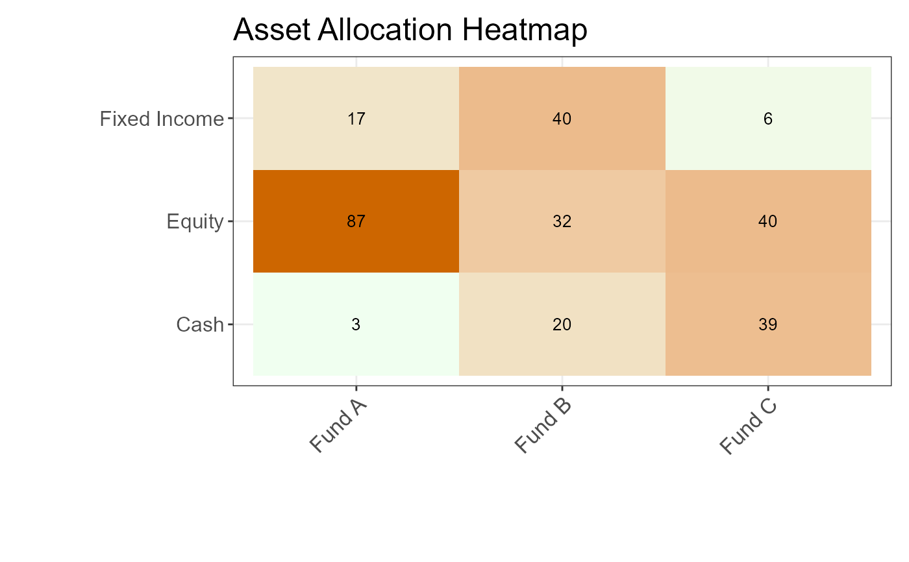

AssetClassAllocationTable
AssetClassAllocationTable.RdThis function generates a heatmap to provide a quick overview of asset allocation concentrations
across various funds or accounts and asset classes. Higher values are highlighted using the
specified high color (h_color, default: darkorange3), while lower values use the low color
(l_color, default: honeydew1), illustrating the intensity of allocation for each combination.
Usage
AssetClassAllocationTable(
df,
x_col,
y_col,
value_col,
chart_title,
l_color = "honeydew1",
h_color = "darkorange3"
)Arguments
- df
A data frame containing the data to be visualized.
- x_col
(string) specifying the column name for the x-axis (e.g., fund names).
- y_col
(string) specifying the column name for the y-axis (e.g., asset classes).
- value_col
(string) specifying the column name for the values to be displayed and used for heatmap coloring.
- chart_title
(string) specifying the title of the chart.
- l_color
(string) specifying the low-end color for the heatmap gradient (default:
"honeydew1").- h_color
(string) specifying the high-end color for the heatmap gradient (default:
"darkorange3").
Examples
# Example data
test_df <- data.frame(
fund = rep(c("Fund A", "Fund B", "Fund C"), each = 3),
asset_class = rep(c("Equity", "Fixed Income", "Cash"), 3),
allocation = runif(9, 0, 1)
)
AssetClassAllocationTable(
df = test_df,
x_col = "fund",
y_col = "asset_class",
value_col = "allocation",
chart_title = "Asset Allocation Heatmap"
)
